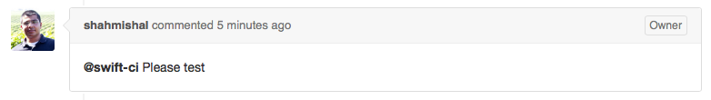
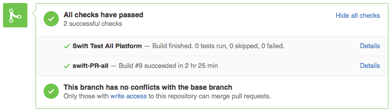
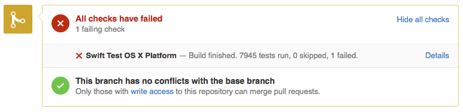

Continuous Integration now Available

We are excited to announce that we have rolled out continuous integration (aka, CI) for the Swift project!
Our CI system is powered by Jenkins. For Apple’s platforms it builds and runs tests for macOS and the iOS simulator. For Linux it builds and runs tests for Ubuntu 14.04 and Ubuntu 15.10 (both for x86_64). In addition to using it for testing active branches, the CI system also produces the snapshots that are available for download from Swift.org.
The intent of the CI is to enable additional configurations to be added over time, especially in the cases where ports to other platforms or architectures reach a critical mass and support from the Swift development community.
CI is not only a powerful tool for monitoring the health of the Swift project, but can also be used as a part of reviewing changes before they land. To facilitate this, we have integrated testing within pull requests, allowing testing to occur before commits are made and without destabilizing the master branch. The results will be posted inline within the pull request. When someone makes a change that breaks a build, they will automatically be notified via email.
Testing Pull Requests
When a change is reviewed on a pull request, a member of the community with commit access can trigger testing of the pull request by the CI system. Tests can be triggered to run on macOS, Linux, or both platforms.

Testing status is then be posted inline with the pull request, showing that a test is in progress. You can click the “details” link to go directly to the status page for the test in progress.

When tests complete, the result is updated in the pull request. 
If there are issues found during testing, you will get a link to the details of the failure. 
In the near future, we will also be supporting running performance tests. We also welcome community involvement to help us expand testing to additional configurations.